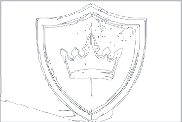
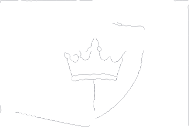
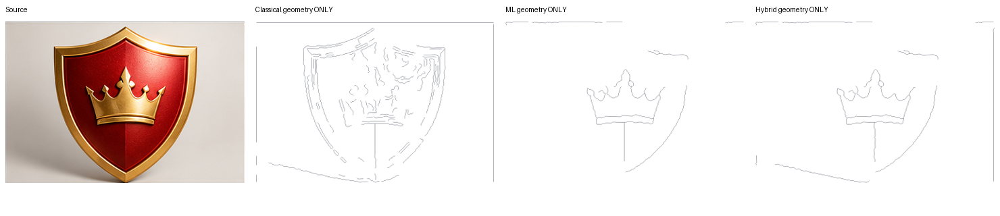

A01_shield
| Arm | Skeleton components (not regions) | Paths | Cubics | Raw boundary recall | Fitted recall |
|---|---|---|---|---|---|
| Classical | 44 | 127 | 1068 | None | None |
| ML | 9 | 30 | 317 | None | None |
| Hybrid | 10 | 32 | 387 | None | None |
Entire crown: tips, valleys, ornament, flanks and bands
16× panes render viewBox115,70,145,100 directly from SVG. No enlarged raster is used as proof of geometry. All candidates remain incomplete; no strict1px claim from uncertain guides.
| Critical guide | CV raw→fit | ML raw→fit | Hybrid raw→fit |
|---|---|---|---|
| shield_outer_silhouette | 0.999 → 0.503 | 0.984 → 0.000 | 0.989 → 0.000 |
| metallic_outer_bevel_ridge | 0.412 → 0.329 | 0.000 → 0.000 | 0.000 → 0.000 |
| metallic_inner_bevel_ridge | 0.796 → 0.376 | 0.292 → 0.146 | 0.293 → 0.146 |
| red_gold_material_interface | 0.644 → 0.160 | 0.318 → 0.140 | 0.318 → 0.140 |
| crown_complete_visible_outline | 0.850 → 0.302 | 0.528 → 0.489 | 0.539 → 0.473 |
| crown_left_tip_and_flank | 0.707 → 0.068 | 0.444 → 0.373 | 0.444 → 0.373 |
| crown_left_inner_tip | 0.702 → 0.249 | 0.478 → 0.491 | 0.478 → 0.481 |
| crown_center_tip_and_lobes | 0.862 → 0.332 | 0.603 → 0.568 | 0.603 → 0.563 |
| crown_right_inner_tip | 0.793 → 0.328 | 0.351 → 0.317 | 0.443 → 0.210 |
| crown_right_tip_and_flank | 0.817 → 0.146 | 0.243 → 0.251 | 0.243 → 0.251 |
| central_ornament_internal_fold | 0.966 → 0.770 | 0.135 → 0.108 | 0.135 → 0.108 |
| lower_band_upper_edge | 0.786 → 0.230 | 0.577 → 0.623 | 0.577 → 0.623 |
| lower_band_lower_edge | 0.913 → 0.613 | 0.308 → 0.381 | 0.308 → 0.381 |
| specular_upper_right_red | 1.000 → 0.826 | 0.517 → 0.517 | 0.517 → 0.517 |
| crown_inner_horizontal_highlight | 0.866 → 0.440 | 0.037 → 0.037 | 0.037 → 0.037 |
| red_center_shading_axis | 1.000 → 0.831 | 0.451 → 0.429 | 0.454 → 0.431 |
Guide proximity is evidence support, not semantic region correspondence; appearance-only guide rows are not required structural boundaries.




Classical full SVG · old fitter SVG · full 4× · detail 4× · detail SVG · all accepted/rejected traces · metrics


ML full SVG · old fitter SVG · full 4× · detail 4× · detail SVG · all accepted/rejected traces · metrics



Hybrid full SVG · old fitter SVG · full 4× · detail 4× · detail SVG · all accepted/rejected traces · metrics
